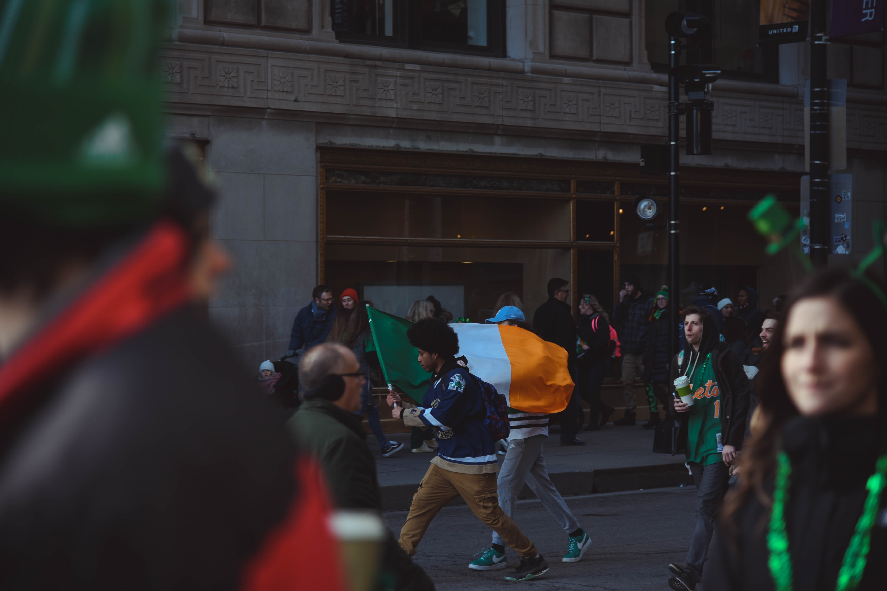

Ulster-Scots: Airlann [ˈɑːrlən]) is an island in the North Atlantic. It is separated from Great Britain to its east by the North Channel, the Irish Sea, and St George's Channel. Ireland is the third-largest island in Europe.
Politically, Ireland is divided between the Republic of Ireland (officially named Ireland), which covers five-sixths of the island, and Northern Ireland, which is part of the United Kingdom. In 2011, the population of Ireland was about 6.6 million, ranking it the second-most populous island in Europe after Great Britain. Just under 4.8 million live in the Republic of Ireland and just over 1.8 million live in Northern Ireland.